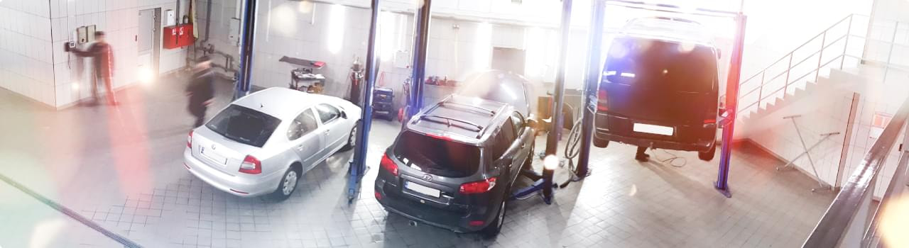

Наша місія — надавати професійні рішення для звичного ритму життя людей, які цінують автокомфорт та прагнуть жити на повну.
Компанія Restart працює на ринку стартерів та генераторів понад 20 років.
Паралельно з гуртовими продажами агрегатів та компонентів на всій території України, компанія розвиває мережу сервісно-технічних центрів у Рівному та Луцьку.

Паралельно з гуртовими продажами агрегатів та компонентів на всій території України, компанія розвиває мережу сервісно-технічних центрів у Рівному та Луцьку.
Сьогодні в Компанії є 7 діючих сервісно-технічних центрів, що надають такі послуги:
- • діагностика, профілактика та ремонт стартерів та генераторів;
- • заміна компонентів агрегатів;
- • діагностика системи кондиціонування азотом;
- • заправка та дозаправка кондиціонера фреоном;
- • ремонт системи кондиціонування;
Компанія Restart (Рестарт) — це справжні професіонали на ринку стартерів та генераторів.
У нас представлений широкий асортимент запчастин та комплектуючих для вантажних та легкових авто,
сільськогосподарських машин, водно-моторної техніки, а також мотоциклів та промислового сектору ринку.
Наш асортимент запчастин налічує:
- • стартери та генератори
- • комплектуючі
- • обладнання для діагностики та ремонту генераторів та стартерів в асортименті
- • деталі для системи кондиціонування
Наші переваги:
- • формування запасів популярних запчастин та їх наявність на наших складах
- • кваліфіковане та швидке обслуговування
- • допомога при виборі запчастин
- • досвідчені майстри сервісу
- • сучасне обладнання та новітні інструменти
- • гарантія якості
Ми постійно слідкуємо за тенденціями та розвитком ринку стартерів
та генераторів в Україні, тому прагнемо завжди тримати в наявності
на складі компанії найпоширеніші позиції.
Спеціалісти компанії завжди нададуть Вам кваліфіковане та швидке обслуговування, допоможуть у підборі агрегатів та компонентів
за допомогою сучасних інструментів пошуку.
Наші знання підкріплені щоденним доступом до технічної бази знань нашої мережі сервісів, яка вже понад 20 років спеціалізується
на обслугованні та ремонтах стартерів та генераторів.
Продукція компанії Restart (Рестарт) представлена брендами AS, Cargo, Koyo, ZM, ZEN, IKA, Mobiletron. Товарна пропозиція компанії включає понад 15 000 позицій, що гарантує клієнтам широкий
вибір товарів, починаючи від оригінальних запчастин
і закінчуючи замінниками за конкурентними цінами.
Ми хочемо розвивати ринок якісних агрегатів, компонентів та послуг з ремонту стартерів, генераторів, тому готові ділитися з партнерами нашими знаннями. Детальнішу інформацію можна знайти у розділі
Готові рішення для СТО